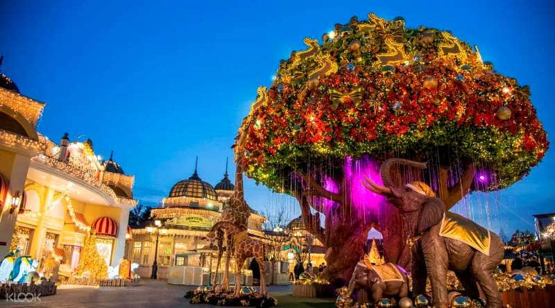
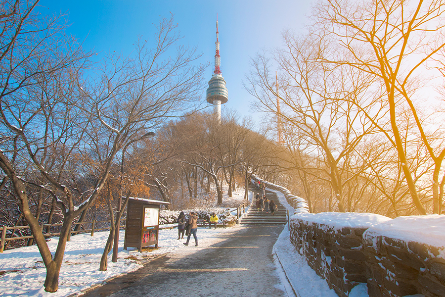
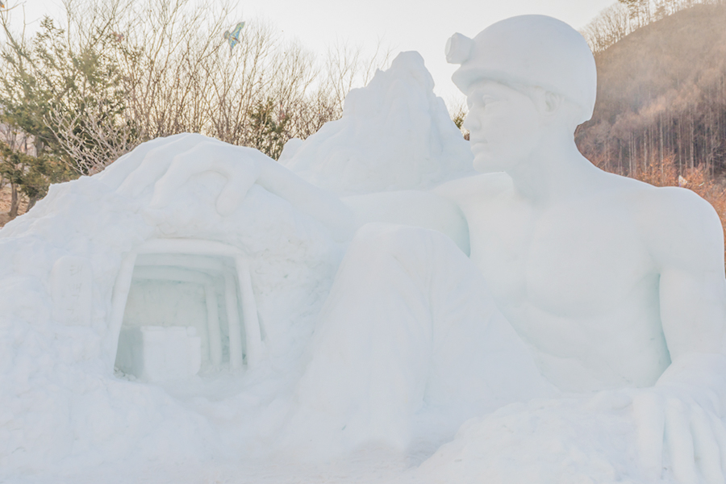
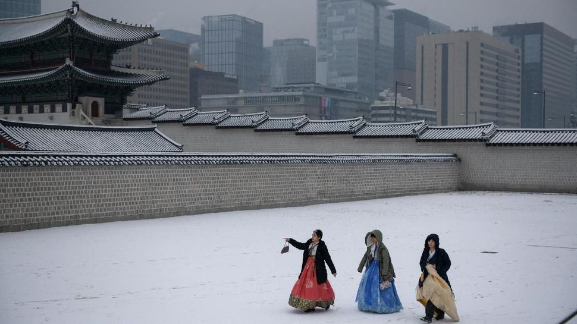
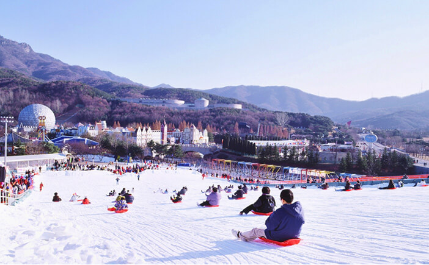

Berikut daftar destinasi wisata musim dingin yang bisa kalian kunjungi:
1. Snow Busters, Everland
 Snow busters adalah tempat wisata Korea Selatan saat musim dingin. Di tempat wisata Korea Selatan saat musim dingin seperti snow busters, wisatawan bisa bermain papan seluncur.Pengunjung di tempat wisata Korea Selatan saat musim dingin ini, akan diajak menaiki sebuah lereng, kemudian meluncur dari atas lereng menggunakan papan luncur.
Aktivitas yang bisa kamu lakukan di Snow Buster adalah bermain papan luncur atau sledding. Kamu akan diajak menaiki sebuah lereng, lalu meluncur dari atas lereng menggunakan papan luncur. Untuk kembali ke atas lereng, kamu gak perlu capek berjalan kaki dari bawah karena sekarang telah tersedia tube lift. Serunya, tiket masuk Snow Busters adalah free karena sudah termasuk tiket masuk Everland theme park.
2. Namsan Tower
 Biasa dikenal dengan sebutan N Tower, tempat ini merupakan pemancar radio di Korea Selatan yang dibuka pada tahun 1980. Tingginya yang mencapai 236 meter, para pengunjung bisa naik hingga ke puncak menara untuk melihat pemandangan kota Seoul lebih luas lagi.
Salju putih yang menyelimuti saat musim dingin di Korea Selatan akan terlihat semakin indah jika dilihat dari atas. Hanya perlu pendakian singkat dari Myeongdong ke puncak Namsan, lalu tiba di Menara N. Sepanjang perjalanan, turis bakal disuguhi dinding benteng dan pepohonan yang tertutup salju. Di tempat ini juga terdapat fasilitas lain selain balkon pengamatan, yaitu mulai dari restoran hingga pusat oleh-oleh.
3. Taebaeksan Snow Festival
 Taebaeksan Mountain Snow Festival jika diterjemahkan ke dalam bahasa Indonesia adalah Festival Gunung Salju Taebaeksan. Terletak di daerah Gangwon-do, Gunung Taebaek akan tertutup salju jika sudah memasuki musim dingin. Setiap tahunnya di gunung tersebut akan diadakan sebuah festival besar.
Dalam festival ini kamu dapat menikmati berbagai patung yang terbuat dari salju. Uniknya patung salju tersebut dibuat dengan berbagai macam bentuk. Dengan ukuran besar banyak patung dibuat menyerupai rumah Korea Hanok, istana Korea sampai karakter dari cerita rakyat Korea.
4. Tembok Benteng Seoul
 Tembok Benteng Seoul atau Seoul's Fortress Walls adalah tempat wisata Korea Selatan saat musim dingin. Ini dikenal sebagai tembok megah bersejarah yang sudah berusia 600 tahun. Wajib banget belajar sejarah kota Seoul dengan datang ke tempat wisata Korea Selatan saat musim dingin ini.
Wisata bisa menyusuri jalan setapak yang tenang sambil melihat hiruk pikuk kota Seoul yang bersalju. Ada banyak cara menuju Tembok Benteng Seoul. Salah satu yang populer adalah berjalan dari Taman Naksan dengan panorama yang indah. Kamu dapat berkunjung ke sana.
5. Bukit Seluncur Seoul Land
 Bukit Seluncur Salju di Seoulland lokasinya dekat dengan Seoul, yakni di Gwacheon, Gyeonggi-do, memberikan liburan musim dingin terbaik untuk keluarga. Konsep taman ini fokus pada kartun anak-anak yang berjudul “Larva”, hal ini dapat menambah keceriaan saat menikmati seluncur di area ini. Keamanan dilakukan dengan memisahkan area seluncur untuk dewasa dan anak-anak.
Di taman bermain yang lokasinya berdekatan dengan lereng, kamu dapat menikmati aktivitas lain dengan membuat boneka salju atau ikut dalam perang salju yang menyenangkan. Area bermainnya juga memiliki seluncuran salju khusus untuk balita dan anak-anak. Tiket harian Seoulland sudah termasuk dengan tiket masuk dan akses untuk menggunakan fasilitas seluncur, namun jika membeli tiket reguler, kamu harus megeluarkan biaya tambahan senilai 5.000 won (4.000 won untuk anak-anak) agar bisa menggunakan fasilitas ini.